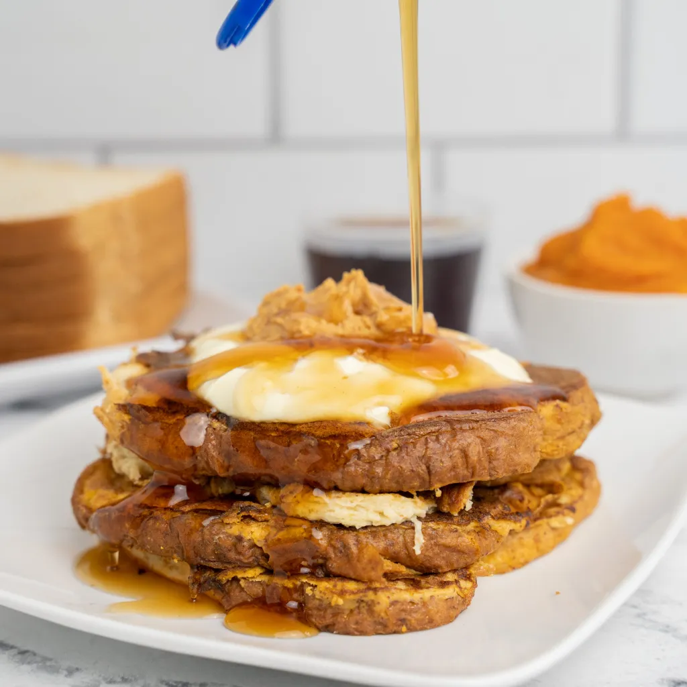

Anabolic French Toast

This recipe will give you gains in no time. Who would’ve thought that you could have an epic stack of fluffy french toast while giving you the protein to build muscle.
I highly reccomend this recipe for anyone who wants a solid breakfast that will turn you into the hulk in to time.
Ingredients
French Toast
- 1 cup (250g) egg whites
- 1/2 cup (120g) canned pumpkin puree
- 4 slices dave's killer bread
- Sugar Free maple syrup
- 1/4 tsp cinnamon
- pinch salt
Vanilla Protein Cream
- Scoop of Vanilla Protein Powder
- 1 cup of plain nonfat greek yogurt
- 1 tbsp sugar free vanilla pudding mix
Steps
Its so easy!
- Preheat a large pan to low/medium heat.
Whisk together egg whites, pumpkin, sugar free syrup, cinnamon and pinch salt.
Add egg mixture to a large dish. Add bread and soak in egg mixture for at least 5 minutes.
This allows the bread to absorb all the egg whites.
- Spray the pan with nonstick spray.
Cook french toast for 4-5 minutes per side or until golden brown and fluffy.
Cooking low and slow is the best way to cook the egg whites all the way through and make the French toast thick and fluffy.
-
While french toast is cooking, mix together Greek yogurt, ONE Protein, and sugar free pudding mix.
If it is too thick to mix, you can add a couple tablespoons of water or milk.
-
Top cooked french toast with vanilla protein cream peanut butter, sugar free maple syrup and any other desired toppings.